Как читать авторский курс и нормативные материалы
Это учебные материалы, а не заключение о соответствии конкретного продукта. Организационные модели курса отделяйте от терминов стандарта: ППК в опубликованном проекте — машиночитаемый перечень, а живой реестр его версий является практикой сопровождения. Термин OSA в разных материалах имеет разный охват. Статус и обязательность нормативного документа проверяются отдельно; проект КАПО опубликован как проект первой редакции.
М07. Лицензионная чистота и юридический workflow
Зачем модуль
Уязвимость можно закрыть патчем, а нарушение лицензии — нет: оно остаётся в выпущенной поставке навсегда. Этот модуль учит превращать строку лицензии из SBOM в управляемое юридическое решение. Граница тут не «безопасно/небезопасно», а «можно распространять на наших условиях / нельзя / нужно отдельное заключение». Сильнейший риск — NOASSERTION и проприетарная лицензия в составе продукта, который Организация считает open-source-чистым.
В отличие от модулей про уязвимости (тут нет CVE и severity), фокус — на тексте лицензии, его нормализации в SPDX-выражение и на цепочке обязательств: что лицензия требует при распространении бинарника, при динамической линковке, при работе по сети.
Ключевые понятия
SPDX License Expression · permissive · weak copyleft · strong copyleft · network copyleft · совместимость лицензий · NOASSERTION · юридический вердикт · evidence
Карта workflow

Материалы модуля
- 01 Конспект — SPDX-выражения, классы лицензий, совместимость, цепочка evidence → вердикт.
- 02 План занятия — тайминг занятия на 90 минут.
- 03 Практическая работа — нормализация лицензий и сборка реестра с вердиктами.
- 04 Контрольные вопросы — проверка понимания + кейсы.
- 05 Что проверять на проекте — чек-лист аудитора.
Связи с курсом
- Практики: П11. ScanCode для лицензий · П12. ORT и license policy · П13. FOSSology как юридический workflow · П26. Лицензионная классификация · П27. Юридическое заключение и реестр лицензий · П30. Исключения и принятие риска
- Смежные модули: лицензия привязана к компоненту, опознанному в М04 (без устойчивого PURL нет к чему привязать вердикт); полнота полей
licensesнапрямую зависит от выбора генератора SBOM из М05 — разные инструменты дают разный набор распознанных лицензий и разное числоNOASSERTION. - Нормативка: SPDX ISO/IEC 5962 · OpenChain ISO/IEC 5230 · ISO/IEC 27001 A.5/A.8
- Шаблоны: Политика лицензионной чистоты · Порядок работы с неизвестной лицензией · Шаблон юридического заключения по лицензии · Реестр исключений
Практический результат
Слушатель строит классификатор лицензий (permissive / weak copyleft / strong copyleft / network copyleft / проприетарная / unknown) с таблицей обязательств и проводит набор SPDX-выражений из реального SBOM через цепочку «evidence → нормализация → вердикт → запись в реестр».